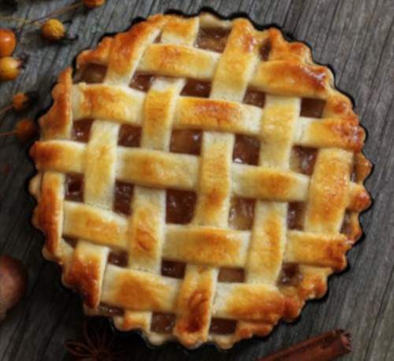

Dolci

I nostri dolci artigianali sono preparati seguendo ricette tradizionali, utilizzando ingredienti freschi e naturali, con particolare attenzione alla nostra frutta di stagione.
La nostra pasticceria include:
- Crostata di ciliegie fresche
- Torta della nonna con frutta di stagione
- Biscotti artigianali
- Dolci speciali per eventi e ricorrenze
Ogni dolce è preparato con cura e passione, utilizzando metodi tradizionali per garantire sapori autentici e genuini.